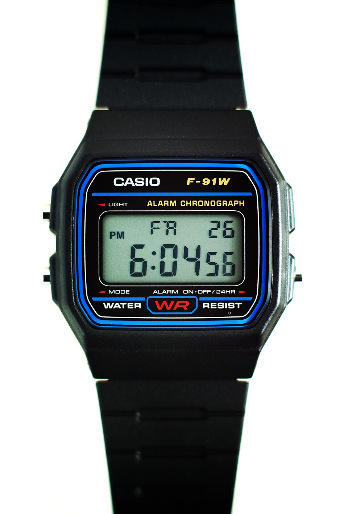
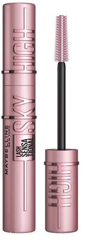
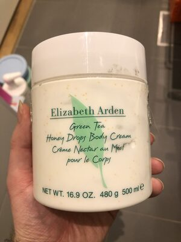
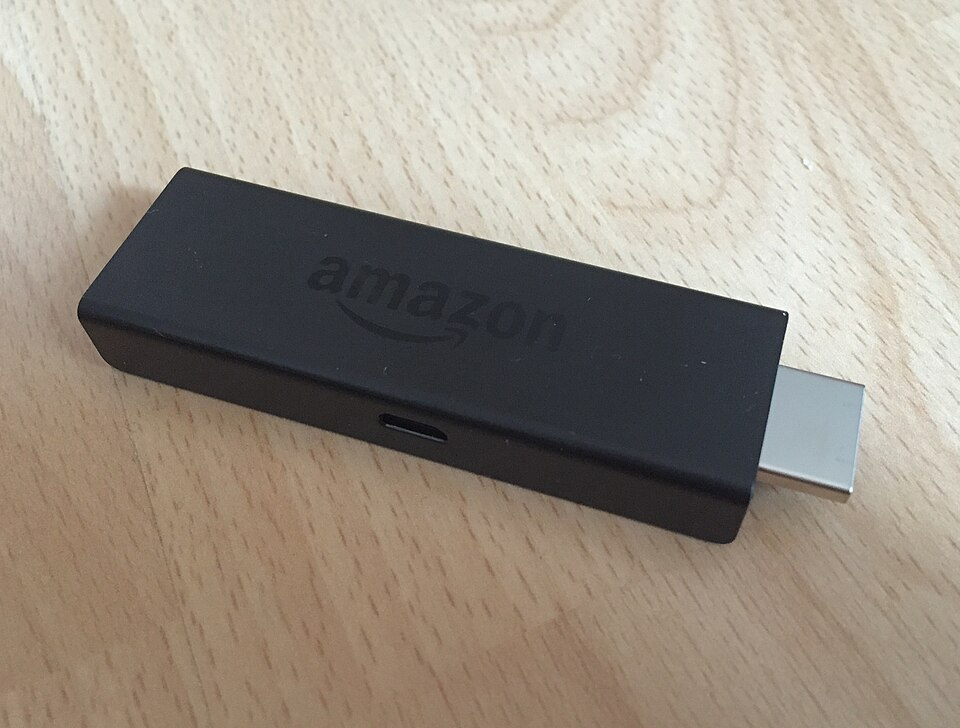
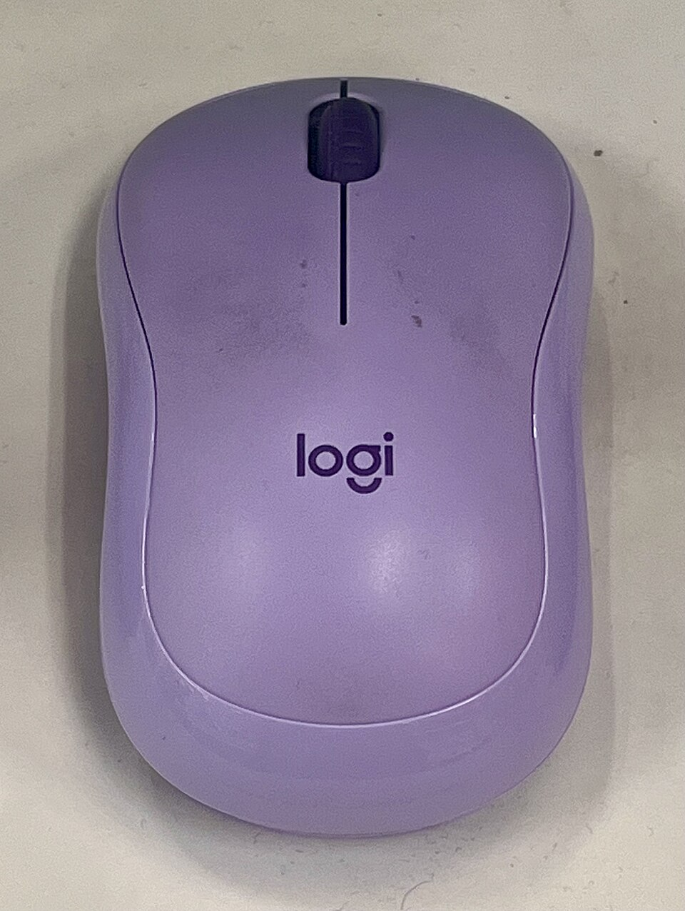
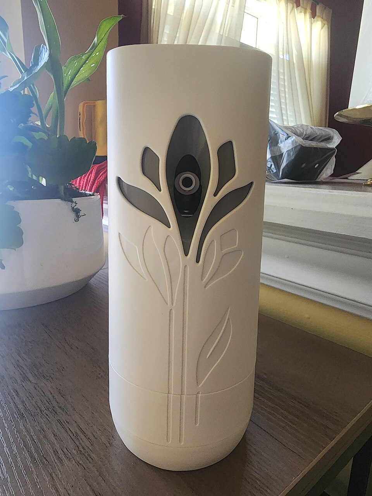
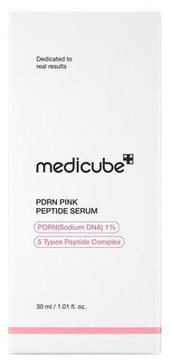
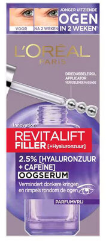
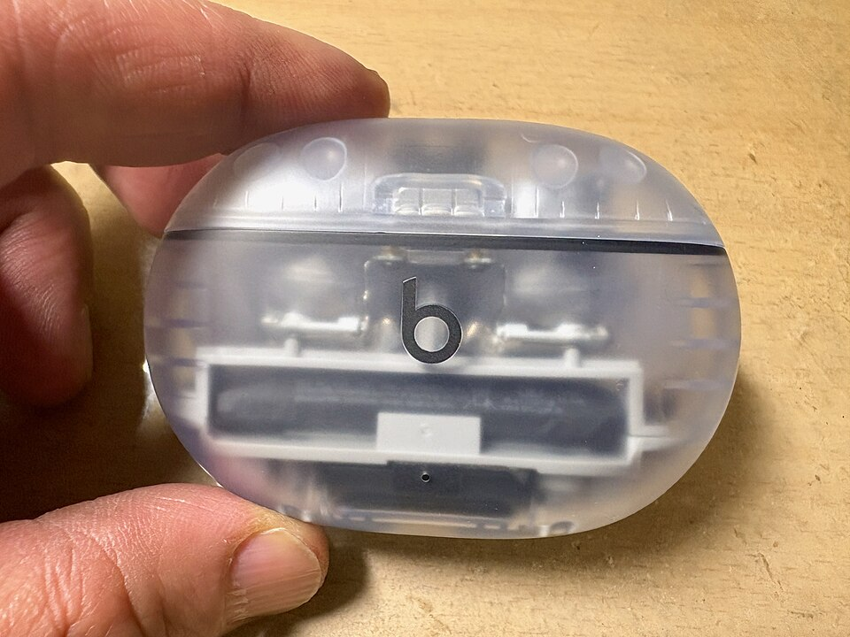

Velan’s
Créditos de imágenes
Algunas fotografías de productos proceden de bancos de imágenes con licencia libre. Agradecemos a sus autores que las compartan. Las marcas y diseños que aparecen pertenecen a sus titulares; su uso es solo identificativo.

Casio F-91W 5051.jpg
Autor: Ashley Pomeroy · Licencia: CC BY-SA 3.0 · Fuente: Wikimedia Commons

Maybelline — Maybelline New York Lash Sensational Sky High Very Black Mascara
Autor: Colaboradores de Open Beauty Facts · Licencia: CC BY-SA 3.0 · Fuente: Open Beauty Facts

Elizabeth Arden — Green Tea Honey Drops Body Cream
Autor: Colaboradores de Open Beauty Facts · Licencia: CC BY-SA 3.0 · Fuente: Open Beauty Facts

Amazon Fire TV Stick.jpg
Autor: ubahnverleih · Licencia: CC0 · Fuente: Wikimedia Commons

Logitech M240 Silent Bluetooth Mouse.jpg
Autor: TaurusEmerald · Licencia: CC BY-SA 4.0 · Fuente: Wikimedia Commons

Air Wick Freshmatic Auto Spray.jpg
Autor: Xynorath · Licencia: CC BY-SA 3.0 · Fuente: Wikimedia Commons

Medicube — Medicube PDRN Pink Peptide Serum
Autor: Colaboradores de Open Beauty Facts · Licencia: CC BY-SA 3.0 · Fuente: Open Beauty Facts

L'Oréal — L'Oréal Paris Revitalift Filler Oogserum
Autor: Colaboradores de Open Beauty Facts · Licencia: CC BY-SA 3.0 · Fuente: Open Beauty Facts

Beats Studio Buds Plus - 1.jpg
Autor: Kyu3a · Licencia: CC BY-SA 4.0 · Fuente: Wikimedia Commons